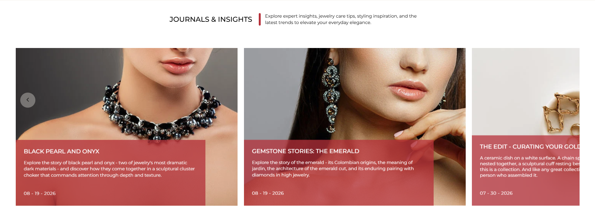
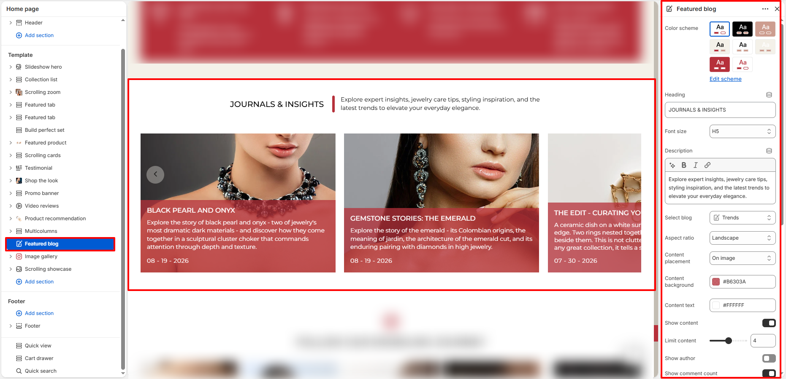

Theme documentation
Featured blog
The Featured blog section delivers an editorial journal experience that lets you showcase curated articles, styling inspiration, jewelry care guides, and behind-the-scenes brand stories directly on your storefront (such as Journals & Insights). With customizable card overlays, versatile image aspect ratios, rich typography, and interactive carousel navigation, it connects customers with your brand narrative and boosts engagement.

Setup
Featured blog Section Settings
Configure section-wide options including color scheme, split-header typography and description, blog source selection, image aspect ratio, content placement style, custom overlay background and text colors, excerpt controls, display toggles, call-to-action button styling, and responsive padding.

- From your Shopify admin, go to Online Store → Themes.
- Click Customize to open the Theme Editor.
- In the template sidebar, select Featured blog (or click Add section → Featured blog).
- Choose a Color scheme for the section background and text.
- Enter a section Heading (e.g., JOURNALS & INSIGHTS) and select the Font size scale (e.g., H5).
- Add a supporting Description to introduce the featured stories.
- Under Select blog, choose the blog category to pull articles from (e.g., Trends).
- Set the Aspect ratio (e.g., Landscape) and Content placement (e.g., On image).
- Customize the Content background color (e.g., #B6303A) and Content text color (e.g., #FFFFFF).
- Toggle Show content, Show date, Show author, Show comment count, or Show tags to suit your layout preferences, and set Limit content.
- Optionally enable Show view all button and select the Button style (Primary or Secondary).
- Adjust Desktop padding and Mobile padding sliders and click Save.
- Color scheme: Select a predefined theme color palette (e.g., Scheme 1, Scheme 2, etc.) to set background and typography styling for the entire section. Click Edit scheme to customize colors directly.
- Heading: Enter the primary section headline displayed on the left of the header (for example: JOURNALS & INSIGHTS). Supports dynamic source connections.
- Font size: Select the typography scale for the section heading (e.g., H1, H2, H3, H4, H5, or H6).
- Description: Enter supporting narrative copy displayed beside the heading, separated by an elegant accent line (for example: Explore expert insights, jewelry care tips, styling inspiration, and the latest trends to elevate your everyday elegance.). Supports rich text formatting (bold, italic, links) and dynamic source connections.
- Select blog: Choose the blog category or publication channel (e.g., Trends, News, or Editorial) from which article cards are dynamically populated.
- Aspect ratio: Choose the display aspect ratio for featured blog post images (e.g., Landscape, Portrait, Square, or Adapt to image).
- Content placement: Select the positioning of the article text box relative to the image (e.g., On image for a modern overlay card, or Below image for a traditional layout).
- Content background: Pick a custom background color for the article content overlay container (e.g., #B6303A).
- Content text: Pick a custom color for the article title, excerpt text, and publication date (e.g., #FFFFFF).
- Show content: Toggle on to display article excerpt / preview copy on each card.
- Limit content: Set the maximum number of excerpt lines/words displayed on article cards using the slider (e.g., 4).
- Show author: Toggle on to display the article author's name on each blog card.
- Show comment count: Toggle on to display the number of comments received on the blog post.
- Show date: Toggle on to display the publication date on each card (e.g., 08 - 19 - 2026).
- Show tags: Toggle on to show blog tags or category badges on each article card.
- Show view all button: Toggle on to display a call-to-action button linking directly to the full blog archive page.
- Button style: Choose the styling appearance for the "View all" button (Primary or Secondary).
-
Desktop padding:
- Padding top: Adjust top vertical spacing on desktop screens (in pixels, e.g., 40 px).
- Padding bottom: Adjust bottom vertical spacing on desktop screens (in pixels, e.g., 40 px).
-
Mobile padding:
- Padding top: Adjust top vertical spacing on mobile screens (in pixels, e.g., 40 px).
- Padding bottom: Adjust bottom vertical spacing on mobile screens (in pixels, e.g., 40 px).
Questions
Frequently asked questions
From your Shopify admin, go to Online Store > Themes and click Customize. In the template sidebar, locate Featured blog or click Add section > Featured blog to add it to your homepage or any other template.
Use the Select blog setting in the Theme Editor sidebar to choose any existing blog from your store (such as Trends, News, or Style Journal). The section will automatically display the most recent articles from that selected blog.
When Content placement is set to On image, the article title, excerpt, and date
are rendered inside a stylish overlay card anchored at the bottom of the article image. You can
customize the overlay background color (such as brand crimson #B6303A) and text
color (such as white #FFFFFF) for high contrast and readability.
Yes. Ensure Show content is toggled on, then use the Limit content slider (e.g., set to 4) to control how many lines of excerpt text appear on each card for a balanced, uniform height across all items.
Enable the Show view all button toggle. This adds a dedicated button below the cards that routes visitors directly to the complete blog archive page. You can style it using either the Primary or Secondary button style option.